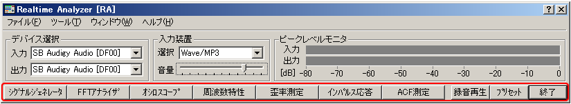

DSSF3 > RA > リファレンス > メインウィンドウ

| ボタン名 | 説明 |
|---|---|
| シグナルジェネレータ |
シグナルジェネレータウィンドウを開きます。
シグナルジェネレータでは正弦波、三角波、方形波、のこぎり波などの指定周波数のトーン信号、ノイズ信号、スイープ信号、パルスなどを出力できます。
|
| FFTアナライザ |
FFTアナライザウィンドウを開きます。
FFTアナライザではスペクトルアナライザ、1/3オクターブバンドアナライザ、3次元(時間-周波数-エネルギー）表示、自己相関、相互相関のリアルタイム表示機能などが可能です。
|
| オシロスコープ |
オシロスコープウィンドウを開きます。
オシロスコープは音響信号の波形を表示します。
|
| 周波数特性 |
周波数特性測定ウィンドウを開きます。
スイープ信号、スポット周波数、ピンクノイズを使った測定が可能です。
|
| 歪率測定 |
歪率測定ウィンドウを開きます。
マニュアル測定、周波数スイープ測定、レベルスイープ測定を行うことができます。
|
| インパルス応答 |
インパルス応答測定ウィンドウを開きます。
M系列信号、TSP方式の二つの方法を用いてインパルス応答を測定できます。また、そのインパルス応答の再生やWAVEファイルへの出力が可能です。また他システムで取得した、WAVEファイルを取り込むことができます。
|
| ACF測定 |
ACF/CCF測定ウィンドウを開きます。
ACF（Auto Correlation Function）、CCF（Cross Correlaton Function）測定は、音響データを時間領域で解析する方法です。計算条件を変更して再計算させたり、指定時間録音して、その音を再生したり、WAVEファイルに出力したり、WAVEファイルをそのまま取り込んで分析できます。
|
| 録音再生 |
サウンドレコーダーウィンドウを開きます。
サウンドデバイスから入力した信号、および本システムから出力した信号を記録することができ、それを再生しながら繰り返し測定することができます。また、記録したデータはWAVEファイルに保存できます。
|
| プリセット |
プリセット設定ウィンドウを開きます。
プリセットとは、リアルタイムアナライザ内の設定値をすべて記憶する機能です。保存されたプリセットを読み出すことによって、記憶した時点のプログラムの状態が再現されます。測定windowsを展開した状態で記憶することもできます。いくつでも記憶可能で、各プリセット値に（識別のため）自由な名前とメモを記録できます。測定までの準備時間を短縮するだけではなく、間違いを減らします。面倒な較正や設定は、測定対象ごとにあらかじめ準備しておけば、それを読み出すだけで、誰でも簡単に測定システムを動かすことができます。また、プリセットのショートカットをデスクトップ上に作成することができ、それをクリックするだけで、保存時の状態でシステムを起動することができます。
|
| 終了 | アプリケーションを終了します。 |
DSSF3 > RA > リファレンス > メインウィンドウ